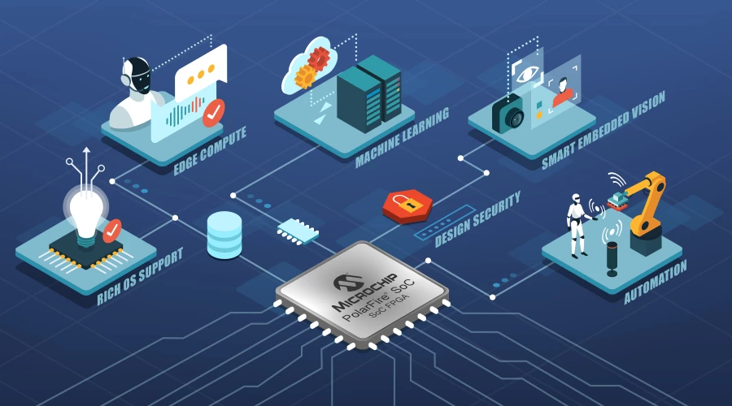

Programacion Embedded
La programación embebida (también conocida como programación de sistemas embebidos) se
refiere al desarrollo de software destinado a ejecutarse en sistemas embebidos. Un sistema
embebido es un sistema informático especializado que está diseñado para realizar tareas
específicas, a menudo con requisitos en tiempo real y en entornos donde los recursos, como la
memoria y el poder de procesamiento, son limitados.
Lenguajes y Tecnologías.
C : Un lenguaje de programación de bajo nivel ampliamente
utilizado en el desarrollo de sistemas embebidos debido a su eficiencia y capacidad
de acceso directo a hardware.
C++ : Extiende las capacidades de
C al agregar características de programación orientada
a objetos, siendo utilizado en sistemas embebidos que requieren abstracciones más
avanzadas.
Assembly : Aunque no es un lenguaje moderno, el uso de lenguaje ensamblador es
esencial para programar directamente el hardware en sistemas embebidos.
Python para Microcontroladores: En algunos
entornos de sistemas embebidos, se utiliza Python
con microcontroladores y placas como MicroPython o CircuitPython para simplificar el
desarrollo.
Conceptos fundamentales.
Tiempo Real (Real-Time): Los sistemas embebidos a menudo operan en entornos de
tiempo real, lo que significa que deben responder a eventos en un plazo específico
y predecible.
Sistemas Operativos en Tiempo Real (RTOS): Estos sistemas ofrecen una gestión
eficiente de tareas y recursos en tiempo real, crucial para aplicaciones embebidas
complejas.
Programación a Nivel de Registro: La programación embebida a menudo implica el
control directo de registros de hardware para gestionar periféricos y recursos.
Optimización de Código: Dada la limitación de recursos en sistemas embebidos, la
optimización del código es esencial para garantizar un uso eficiente de la memoria y
la energía.
Gestión de Energía: En dispositivos embebidos alimentados por batería, la gestión
eficiente de la energía es crítica para maximizar la duración de la batería.
Áreas especializadas.
Automoción: Sistemas embebidos se utilizan en controladores del motor, sistemas de
frenado, sistemas de entretenimiento y más en vehículos.
Electrónica de Consumo: Dispositivos como cámaras digitales, electrodomésticos
inteligentes y dispositivos portátiles incorporan sistemas embebidos.
Sistemas Médicos: Equipos médicos utilizan sistemas embebidos para monitorización,
diagnóstico y control de dispositivos.
Automatización Industrial: Controladores embebidos gestionan maquinaria y sistemas en
entornos industriales automatizados.
IoT (Internet de las cosas): Dispositivos IoT, desde sensores hasta dispositivos
domésticos inteligentes, incorporan sistemas embebidos para la conectividad y el
procesamiento local.
